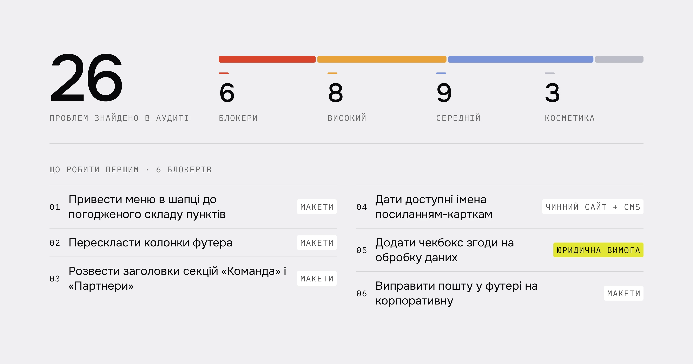
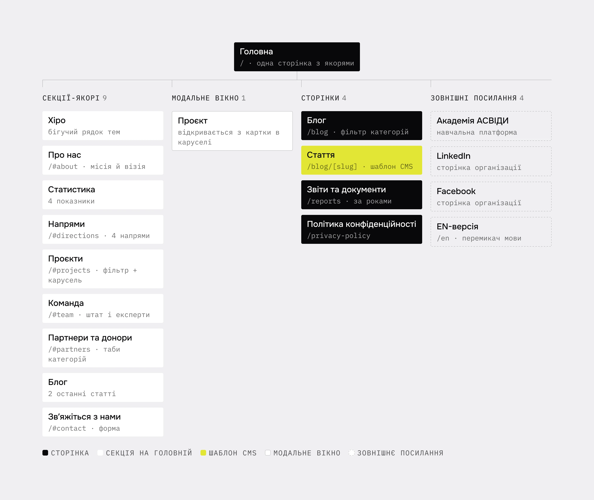
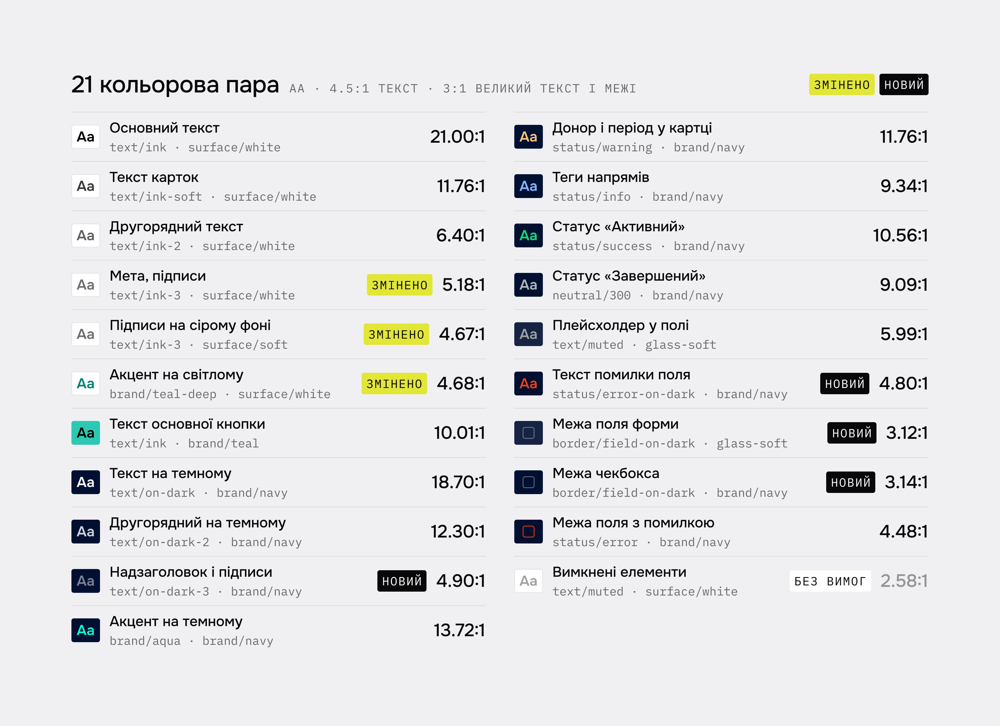

Сайт має допомагати зрозуміти організацію та її роботу
АСВІДА працює з відкритими даними, антикорупційними проєктами й навчанням. Для потенційного партнера сайт має відповідати на конкретні питання: чим займається організація, які проєкти реалізує, з ким співпрацює та як до неї звернутися.
На старті були сайт на Wix, початкові макети трьох сторінок і погоджені тексти. Моєю задачею було узгодити ці матеріали та довести дизайн до передачі в розробку.
26 проблем – і чіткий порядок роботи
Я зіставила чинний сайт, макети й контент-матрицю. Виявила 26 проблем, із яких 6 отримали найвищий пріоритет.
На структуру та взаємодію найбільше впливали три речі:
- Навігація не відповідала контенту. Шапка й футер містили різні набори пунктів, частина посилань дублювалася.
- 16 посилань не мали доступного імені. Картки проєктів і блогу неможливо було розрізнити за назвою через екранний читач.
- Форма потребувала доопрацювання. У початкових макетах бракувало погодженого чекбокса згоди та станів взаємодії.
Аудит став основою пріоритетів: спочатку структура, доступ до контенту й форма, потім узгодженість компонентів і візуальні деталі.

Яку інформацію потрібно показати потенційному партнеру
Проаналізувала сім українських і міжнародних організацій у сфері відкритих даних та громадського контролю. Зосередилася на трьох питаннях: як вони представляють проєкти, де розміщують звітність і як показують партнерів та донорів.
Це допомогло визначити склад інформації для сайту: донор, період і статус проєкту, звіти та документи, зрозумілий шлях до співпраці. Окремо запропонувала доповнити інформацію про організацію органами управління й установчими документами.
Зібрати навігацію навколо зрозумілої структури
- Проблема
- Меню змішувало секції головної та окремі сторінки, а футер дублював посилання.
- Рішення
- Спроєктувала головну з якірною навігацією. Блог, статті, звіти й політика конфіденційності отримали окремі сторінки. Деталі проєкту відкриваються в модальному вікні.
- Що змінилося
- Для кожного типу контенту визначено місце й спосіб переходу. У проєкті ключова інформація – донор, період, напрями та статус – стоїть перед докладним описом.

Розділити навігацію проєктами та їхні теги
- Проблема
- У матеріалах шість проєктів мали 13 різних міток. Використання всіх міток у фільтрі перевантажувало навігацію.
- Рішення
- У фінальному інтерфейсі фільтр містить п’ять табів, включно з «Усі проєкти». Детальні характеристики залишаються тегами на картках.
- Подальший розвиток
- Запропонувала прив’язати фільтр до чотирьох стратегічних напрямів організації. Це дозволить зберігати стабільний набір категорій зі зростанням кількості проєктів.
Узгодити заклик до дії зі сценарієм співпраці
- Проблема
- Кнопка «Підтримати» могла створювати очікування пожертви, хоча форма призначена для звернень щодо співпраці.
- Рішення
- Використала «Долучитися» як перехід до форми. Передбачила вибір типу співпраці, згоду на обробку даних і зрозумілі повідомлення про помилки.
- Що змінилося в дизайні
- Кнопка відповідає наступному кроку, а форма має визначені стани полів, чекбокса й фокуса. Помилки пояснюються текстом поряд із полем.

Головна по блоках, блог і стаття
Головна – одна сторінка з дев’ятьма секціями-якорями. Нижче – частина блоків у тому порядку, у якому вони стоять на сторінці.


Блог і статті – окремі сторінки CMS. Список фільтрується за категоріями, на мобільному фільтр згортається у випадний список. Кожна стаття зібрана за одним шаблоном: категорія в хлібних крихтах, дата й час читання, обкладинка, блок-виноска, джерела та «Читайте також».


Від перевірки контрасту до вимог взаємодії
Перевірила 21 кольорову пару. За результатами змінила два токени й додала три нові для підписів, помилок і меж полів.
- 4,67:1AA
підписи на сірому фоні
- 4,80:1AA
текст помилки на темному
- 3,12:1AA
межа поля форми
Окремо підготувала 12 вимог до реалізації: видимий фокус, доступні імена карток, клавіатурна навігація, керування рухом і текстові повідомлення форми.

Єдині правила для сторінок і нового контенту
Зібрала семантичні кольорові змінні, 25 текстових стилів, відступи й компоненти зі станами. Блоки сторінок підготувала для Desktop, Tablet і Mobile.
Для CMS описала структуру контенту та зв’язки між колекціями. Для команди організації підготувала три інструкції зі створення зображень: обкладинки статей, ілюстрації проєктів і обробка фото співробітників.
Це дає основу для подальшого розвитку сайту зі збереженням узгодженого стилю.

Від розрізнених матеріалів до узгодженого дизайну
У межах проєкту я поєднала аудит, структуру, інтерфейс і вимоги до реалізації. Результат – адаптивні макети, компоненти, структура CMS та документація, що пояснює, як сайт має виглядати й працювати.
Найважливішою частиною роботи було узгодження контенту, навігації та взаємодії: від інформації на картці проєкту до стану помилки у формі.
Наступні кроки: перевірити реалізовані сценарії з клавіатурою й екранним читачем, протестувати пошук проєкту та звернення щодо співпраці, а після накопичення аналітики оцінити, де користувачі зупиняються.